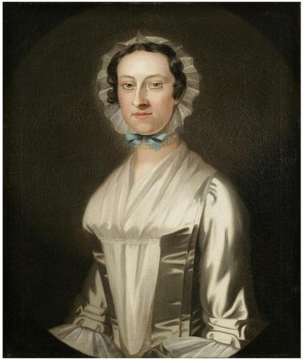

Sara Livingston Alexander
Sara Livingston was born in November 1725. She was the daughter of Albany leaders Philip and Catharina Van Brugh Livingston. She was the ninth of twelve children christened to the couple between 1708 and 1733. Born into the family of an outstanding regional businessman and operative, Sara knew homes in Albany, New York City, and on the Livingston country estate known as Clermont. 
She is said to have received an outstanding home-based education, was bilingually fluent, and also was said to have received some training in accounting. She was known to be a devout and lifelong adherent of the Dutch Reformed church.
In March 1748, Sara was twenty-three when she married New York native William Alexander. By 1755, the marriage had produced but two or three children. The portrait shown here dates from the time of her marriage.
Sarah was identified as the wife of William Alexander when she was named among the heirs in the will filed by her father in July 1748. Upon her mother's passing, she was to receive an proportional share of his estate.
The couple first set up their home in Manhattan where William had been engaged in family commercial enterprises. Perhaps he brought Sara to the place of her birth while he attended the Albany Congress in June 1754 in place of his father. Following the outbreak of hostilities, Alexander joined the British military and commissary and served under Governor William Shirley of Massachusetts.
Sometime in 1756, Alexander sailed to England to testify on behalf of William Shirley. He did not return until 1761. His absence may account for the smallish size of their family while she was in her early thirties. We seek information on Sara's life during these years.
Following William's return, these Alexanders followed family opportunities to Basking Ridge, New Jersey where they began to build a grand estate. Sara's older brother would become the first governor of New Jersey in 1772 and the couple began to take their place in the upper ranks of provincial society. During those years, she has been remembered as "Lady Stirling" (an alusion to her husband's somewhat dubious British title) and as "prominent in New York and New Jersey social circles."
During the War for Independence, Alexander was a field officer in the Revolutionary army. He was captured by the British, exchanged, served valiantly, and then was named to command the northern army. In 1781, Sara accompanied him to Albany where she was re-united with her Livingston kin, several of whom had become refugees in the Upper Hudson. However, "Lord Stirling" was in chronically poor health and died in Albany in January 1783. Alexander's will left all of this estate (and his debts as well) to his widow.
With the coming of peace, Sara probably followed her daughter's family back to New York as William Alexander had died heavily in debt. With diminishing prospects of recovering their fortunes, the Duer-Alexander household barely held on in post-war society even though at Washington's "Inauguration Ball" in 1789 "among the most distinguished women present were Lady Stirling and her two daughters."
During those years, "Lady Stirling" or her family sought to receive compensation for her husband's wartime service. That process might be more fruitfully investigated.
An antiquarian historian penned this character sketch: "Possessed naturally of a strong mind, she preserved her mental faculties unimpared to the last and found in her religious faith consolation for the reverses of fortune she had experienced in her later years."
Known historically as "Lady Stirling," Sara Livingston Alexander died in March 1805. She had lived for eighty years.
Portrait: Probably painted by John Wollaston between 1750 and 1752 when the distinctive artist was in New York and produced a companion portrait of her husband. Collection of the New-York Historical Society. The image shown here was adapted from an online posting. Additional likenesses purporting to be "Sarah Livingston Alexander" or "Lady Stirling" have been encountered.